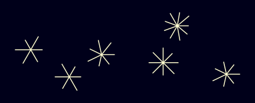
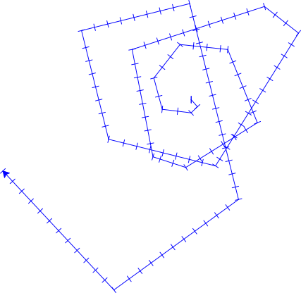
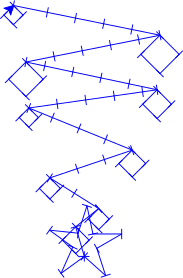

Julekuler, stjernehimler og tilfeldighet
Contents
Julekuler, stjernehimler og tilfeldighet#
{kind=link}
{kind=link}
Hvilken av de to stjernehimlene over ser mest «naturlig» ut? Når vi lager kunst med programmering, blir tegningene våre fort veldig ryddige og perfekte. Dette kan føre til veldig vakre mønstere, men naturen er ikke helt perfekt, så det kan også se litt «kunstig» ut. Et triks for å få litt av naturens «ikke-perfekthet» inn in kodekunsten vår er å bruke tilfeldighet. Å legge på litt tilfeldighet er en teknikk som er hyppig brukt i bildekunst, spilldesign, animasjon og musikk
Bildekunst#
Generativ kunst, variant 10print.

Prosedurale teksturer for dataspill#
Illustrasjon av proseduralt genererte teksturer (illustrasjon av Drummyfish)
{kind=link}
Proseduralt landskap#
Proseduralt generert landskapsbilde (illustrasjon av Levyznin)
{kind=link}
Musikk#
Bilde av en modulær sythesizer. Slike kan ofte spille av lydsekvenser i en tilfeldig rekkefølge (Bilde av Muff på Flickr (CC-BY 2.0))
Tilfeldighet med Python#
Under er et eksempel på broderi som vi skal lage i denne guiden.

Det første vi kan starte med er å se hvordan vi kan lage tilfeldige tall i Python. Nedenfor er en kodesnutt som printer ut et tilfeldig tall.
1import random
2
3tilfeldig_tall = random.randint(1, 6)
4print(tilfeldig_tall)
2
- Linje 1
Importerer
random-biblioteket som vi kan bruke for å trekke tilfeldige tall.- Linje 3
Bruker
random.randint-funksjonen til å trekke et tilfeldig tall fra og med1til og med6og lagrer dette tilfeldige tallet itilfeldig_tall-variabelen.
Prøv selv:
Kjør koden mange ganger. Får du forskjellig hver gang?
Endre så det istedenfor gir et tall mellom 50 og 100
Kjør koden mange ganger igjen, får du andre tall ut nå?
Dette kan vi bruke for å gjøre broderiene våre mer spennende. Her er kode for å generere en enkel stjerne
1from turtlethread import Turtle
2
3nål = Turtle()
4with nål.running_stitch(25):
5 for stråle in range(6):
6 strålelengde = 100
7 nål.forward(strålelengde)
8 nål.backward(strålelengde)
9 nål.right(60)
10
11nål.visualise()

For å gjøre den mer naturlig og interessant kan vi legge på litt tilfeldighet på lengden til strålene:
1import random
2from turtlethread import Turtle
3
4nål = Turtle()
5with nål.running_stitch(25):
6 for stråle in range(6):
7 strålelengde = random.uniform(80, 120)
8 nål.forward(strålelengde)
9 nål.backward(strålelengde)
10 nål.right(60)
11
12nål.visualise()
{kind=link}
- Linje 7
Trekker et tilfeldig tall mellom 80 og 120 og lagrer det i
strålelengdevariabelen.
Her ser vi at stjernen ser litt mer tilfeldig ut og dermed også litt mer naturlig.
Prøv selv:
Endre så stråle-lengden er mellom 25 og 125 istedenfor 80 og 120. Hvordan endrer dette uttrykket til stjernen?
Endre koden slik at antall stråler også er et tilfeldig tall. (HINT: Vinkelen mellom hver stråle må være
360 / antall_stråler)
Klikk her for å se programmet slik det skal være om du har gjort det rett:
1import random
2from turtlethread import Turtle
3
4nål = Turtle()
5with nål.running_stitch(25):
6 antall_stråler = random.randint(3, 10)
7 for stråle in range(antall_stråler):
8 strålelengde = random.uniform(25, 125)
9 nål.forward(strålelengde)
10 nål.backward(strålelengde)
11 nål.right(360 / antall_stråler)
12
13nål.visualise()
{kind=link}
Obs
Pass på at koden stemmer med løsningsforslaget over før du går videre.
Nå har vi tegnet en tilfeldig stjerne, men vi kan ta det hele ett steg lengre ved å tegne flere tilfeldige stjerner plassert tilfeldig over en stjernehimmel.
Vi kan f.eks. bruke goto-kommandoen og la nåla gå til en tilfeldig plass på stoffet for hver stjerne.
Koden nedenfor tegner en stjernehimmel med fire tilfeldige stjerner plassert tilfeldig ut over stjernehimmelen.
1import random
2from turtlethread import Turtle
3
4nål = Turtle()
5with nål.running_stitch(25):
6 antall_stjerner = 4
7 for stjerne in range(antall_stjerner):
8 x = random.randint(-250, 250)
9 y = random.randint(-250, 250)
10 nål.goto(x, y)
11
12 antall_stråler = random.randint(3, 10)
13 for stråle in range(antall_stråler):
14 strålelengde = random.randint(25, 100)
15 nål.forward(strålelengde)
16 nål.backward(strålelengde)
17 nål.right(360 / antall_stråler)
18
19nål.visualise()
{kind=link}
- Linje 6
Definerer en antall_stjerner variabel som sier hvor mange stjerner vi ønsker å tegne
- Linje 7
Starter løkka vi bruker for å tegne flere stjerner
- Linje 8-9
Trekker tilfeldige koordinater mellom
-250og250for hver av stjernene våre- Linje 10
Beveger nåla til den tilfeldige posisjonen hver av stjernene skal ha
Her har vi en fin, tilfeldig stjernehimmel! Men nå broderer vi også en linje mellom stjernene. Det kan gi en kul effekt som kanskje kan minne om stjernetegn, men hvis vi ikke ønsker å ha en slik linje kan vi bruke jump stitch til å la nåle hoppe uten å sy mellom hver stjerne.
1import random
2from turtlethread import Turtle
3
4nål = Turtle()
5
6antall_stjerner = 4
7for stjerne in range(antall_stjerner):
8 x = random.randint(-250, 250)
9 y = random.randint(-250, 250)
10 with nål.jump_stitch():
11 nål.goto(x, y)
12
13 with nål.running_stitch(25):
14 antall_stråler = random.randint(3, 10)
15 for stråle in range(antall_stråler):
16 strålelengde = random.randint(25, 100)
17 nål.forward(strålelengde)
18 nål.backward(strålelengde)
19 nål.right(360 / antall_stråler)
20
21nål.visualise()
{kind=link}
- Linje 6-7
Løkka som itererer over stjernene er flyttet ut av kodeblokka hvor nåla har sømmeinstrukser. Vi flytta løkka siden vi ønsker å bruke forskjellige sømmeinstrukser når vi tegner stjernene og når vi flytter nåla mellom stjernene.
- Linje 10
Gir nåla instruks om å flytte seg uten å sy sting. Dersom broderimaskina støtter det vil den klippe tråden om den allerede har sydd noen sting.
- Linje 13
Her er kodeblokka hvor vi tegner hver enkelt stjerne.
Prøv selv:
Endre koden slik at du tegner et tilfeldig antall stjerner på stjernehimmelen
Klikk her for å se programmet slik det skal være om du har gjort det rett:
1import random
2from turtlethread import Turtle
3
4nål = Turtle()
5
6antall_stjerner = random.randint(1, 10)
7for stjerne in range(antall_stjerner):
8 x = random.randint(-250, 250)
9 y = random.randint(-250, 250)
10 with nål.jump_stitch():
11 nål.goto(x, y)
12
13 with nål.running_stitch(25):
14 antall_stråler = random.randint(3, 10)
15 for stråle in range(antall_stråler):
16 strålelengde = random.randint(25, 100)
17 nål.forward(strålelengde)
18 nål.backward(strålelengde)
19 nål.right(360 / antall_stråler)
20
21nål.visualise()
{kind=link}
{kind=link}
Obs
I dette eksempelet bruker vi randint-funksjonen i random-biblioteket, som trekker tall fra og med første argument, til og med andre argument.
Hvis vi istedenfor hadde brukt randint-funksjonen i numpy.random eller pylab, så ville vi ikke kunne fått det andre argumentet.
For eksempel vil random.randint(1, 6) gi oss et av tallene 1, 2, 3, 4, 5 eller 6, mens numpy.random.randint(1, 6) og pylab.randint(1, 6) vil bare gi oss et av tallene 1, 2, 3, 4 eller 5.
Prøv selv:
Lag ditt eget broderimønster med tilfeldighet. Nedenfor er et galleri som du kan ta inspirasjon fra.
Eksempelbroderi med tilfeldighet#
Eksempel 1
{kind=link}
Kode
1import random
2from turtlethread import Turtle
3
4nål = Turtle()
5
6with nål.running_stitch(20):
7 for side in range(20):
8 sidelengde = random.randint(5 * side, 20*side)
9 nål.forward(sidelengde)
10 vinkel = random.randint(45, 90)
11 nål.right(vinkel)
12
13nål.visualise()
Eksempel 2

Kode
1from turtlethread import Turtle
2import random
3
4nål = Turtle()
5
6with nål.running_stitch(20):
7 nål.circle(10)
8 for sirkel in range(5):
9 x = random.randint(-200, 200)
10 y = random.randint(-200, 200)
11 nål.goto(x, y)
12 radius = random.randint(5, 40)
13 nål.circle(radius)
14
15nål.visualise()
Eksempel 3

Kode
1import random
2from turtlethread import Turtle
3
4nål = Turtle()
5
6with nål.running_stitch(30):
7 # Tegn ett snøfnugg med seks sider
8 for side in range(6):
9
10 # Bestem hvor mange grener vi ønsker
11 antall_grener = random.randint(2, 5)
12
13 # Gi det speilsymmetri
14 for retning in [1, -1]:
15
16 nål.forward(30)
17
18 # Legg til en liten gren i starten
19 nål.right(120 * retning)
20 nål.forward(30)
21 nål.backward(30)
22 nål.left(120 * retning)
23
24 # Legg til et tilfeldig antall grener hvor hver gren har tilfeldig vinkel og lengde
25 for gren in range(antall_grener):
26 nål.forward(30)
27 grenvinkel = random.randint(50, 70)
28 grenlengde = random.randint(20, 30)
29
30 nål.right(grenvinkel * retning)
31 nål.forward(grenlengde)
32 nål.backward(grenlengde)
33 nål.left(grenvinkel * retning)
34
35 nål.forward(30)
36 nål.backward(60 + 30*antall_grener)
37
38 nål.right(60)
39
40nål.visualise()
Eksempel 4
{kind=link}
Kode
1import random
2from turtlethread import Turtle
3
4nål = Turtle()
5
6with nål.running_stitch(30):
7
8 # Tegn stjerna i toppen av juletreet
9 nål.right(360 / 5*2)
10 for p in range(5):
11 nål.forward(30)
12 nål.right(150)
13 nål.forward(30)
14 nål.left(150)
15 nål.right(360/5)
16
17 # Reset back to start
18 nål.home()
19
20 # Tegn treet med julekuler på
21 retning = 1
22 for gren_nummer in range(1, 10):
23 retning *= -1 # Snu nåla hver runde
24 y = 30 * gren_nummer
25 x = 10 * gren_nummer
26
27 # Legg på litt tilfeldighet mtp hvor grena ender
28 jitter_x = random.randint(-x//3, x//3)
29 jitter_y = random.randint(-10, 10)
30
31 # Gå til der grena ender
32 nål.goto(retning * x + jitter_x, y + jitter_y)
33
34 # Tegn julekule
35 radius = random.randint(10, 20)
36 nål.circle(-radius)
37
38nål.visualise()